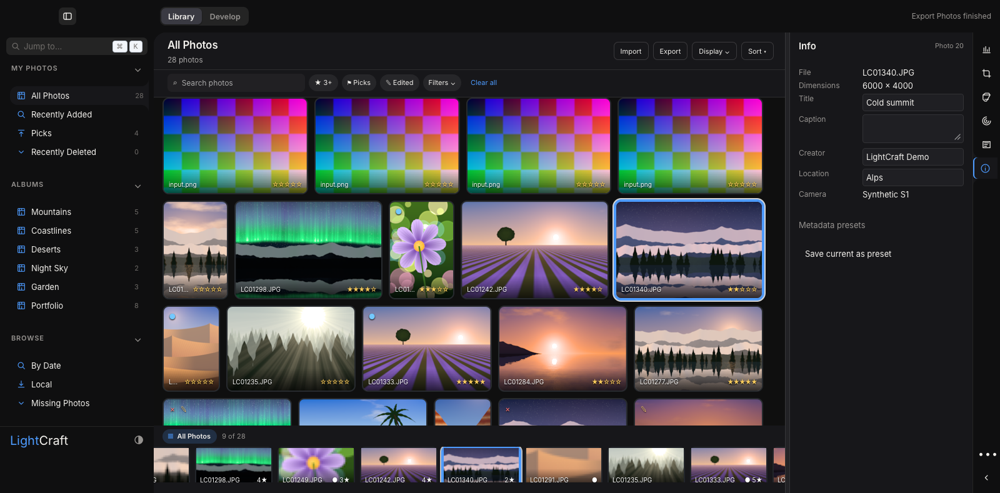
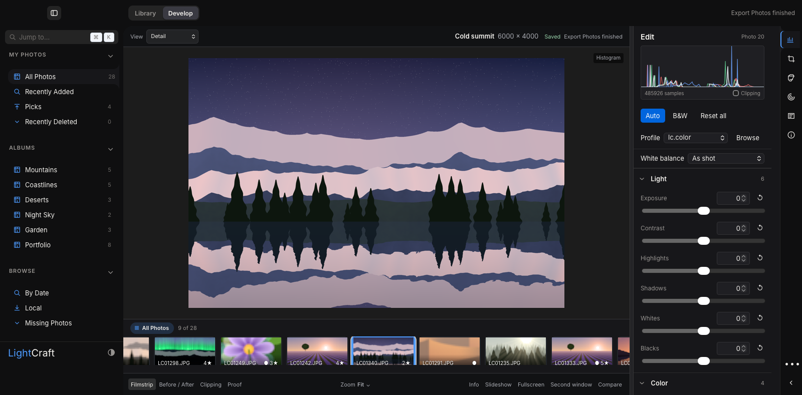
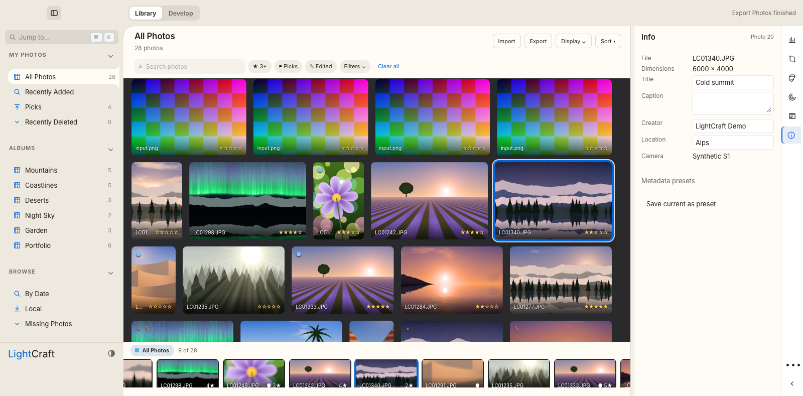
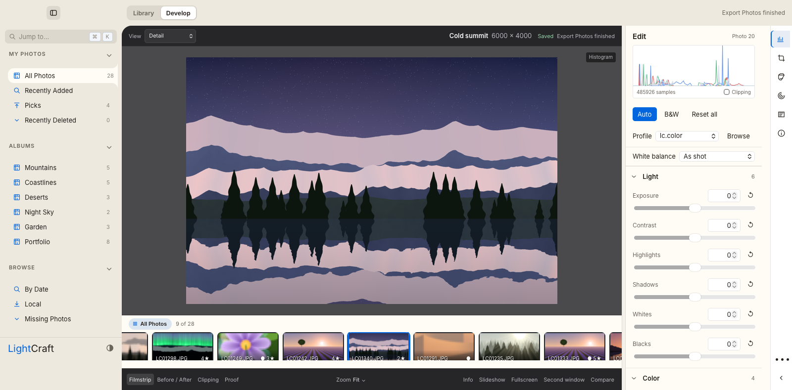

Implemented workspace · actual app
Source cb7a30b · captured 8 October 2026 · Astra layout with Fable refinements. Both sidebars open; filmstrip visible in Library & Develop.
Mac functional smoke · PASS
Actual slider gesture changes decoded preview with one undo step; undo restores edit. Background import & 96×64 PNG export pass.
Actual slider gesture changes decoded preview with one undo step; undo restores edit. Background import & 96×64 PNG export pass.
Windows native CI · 12/12 PASS
Real import/export, RAW, editing, preferences, gestures, scalability & catalog recovery. Layout measured at 1280×800 & 1600×1000; collapsed More remains reachable.
Real import/export, RAW, editing, preferences, gestures, scalability & catalog recovery. Layout measured at 1280×800 & 1600×1000; collapsed More remains reachable.
Design review & contrast · PASS
Astra reviewed actual captures. Light & Color lead inspector; Exposure visible without scrolling. Light/dark filmstrip & Auto text meet 4.5 contrast.
Astra reviewed actual captures. Light & Color lead inspector; Exposure visible without scrolling. Light/dark filmstrip & Auto text meet 4.5 contrast.
Workspace CI · running
Generated source contracts, frontend typecheck/build & Rust quality gates. Current results
Generated source contracts, frontend typecheck/build & Rust quality gates. Current results
Library · dark

Develop · dark

Library · light

Develop · light

Preview qualification
Strict Mac CI retains foreground identity tracking & exact viewport blockers. Normal LaunchServices launch & installer rollback remain unqualified. Original installed LightCraft stays default; one owned preview bundle is reused. Captures show actual packaged WKWebView & Rust processing with original procedural fixtures at 1600×789.